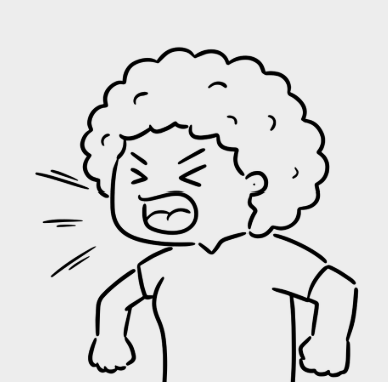
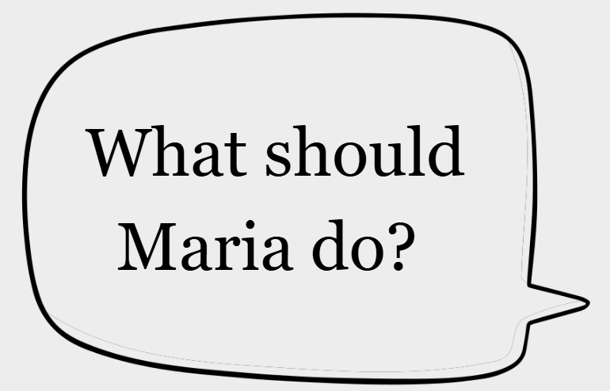

Projection is a defense mechanism. It’s a way of dealing with the discomfort that may arise with insecurities or difficult emotions.
Insecurities are parts of yourself that you don’t like or feel embarrassed about.
Insecurities can range widely from things like your face to the way you talk.
Justine questions everything that Maria does in a group project. Maria is a talented pupil. Justine blames Maria for the work taking too long and how they don’t have enough time left. When Maria drops something or forgets to bring an item Justine is quick to shout at her and accuses her of being disrespectful.
Justine notices that Maria is becoming more upset about the behaviour. Someone asks Justine about this but she then says ‘ Maria is really bossy and rude to me’.

If Maria trusts Justine she can tell her how she is feeling to give her a chance of changing.
Maria should talk to her family, close friends and teacher about what is going on to remind herself that she isn’t the person Justine is projecting her to be.
If she is feeling too uncomfortable she can ask to switch partners- you don’t deserve to have to stick through unhealthy dynamics.
